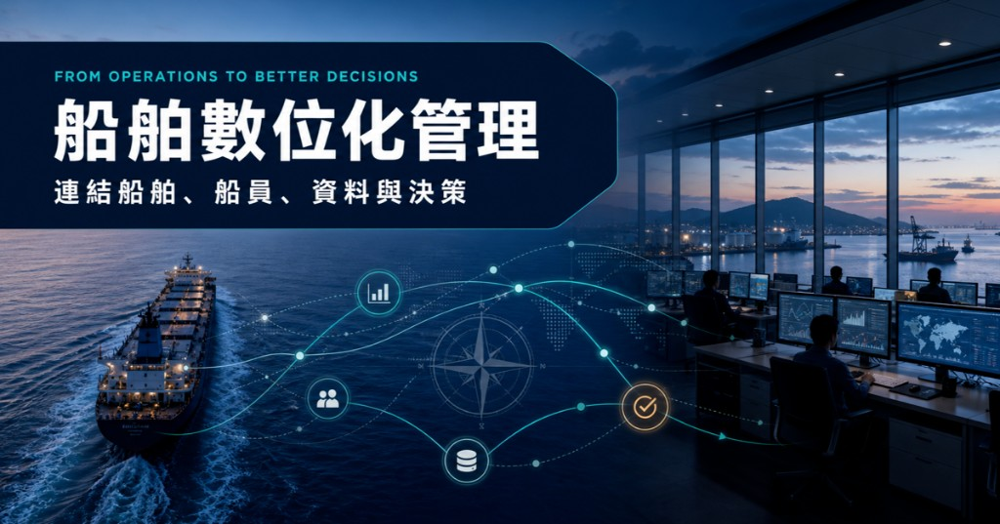
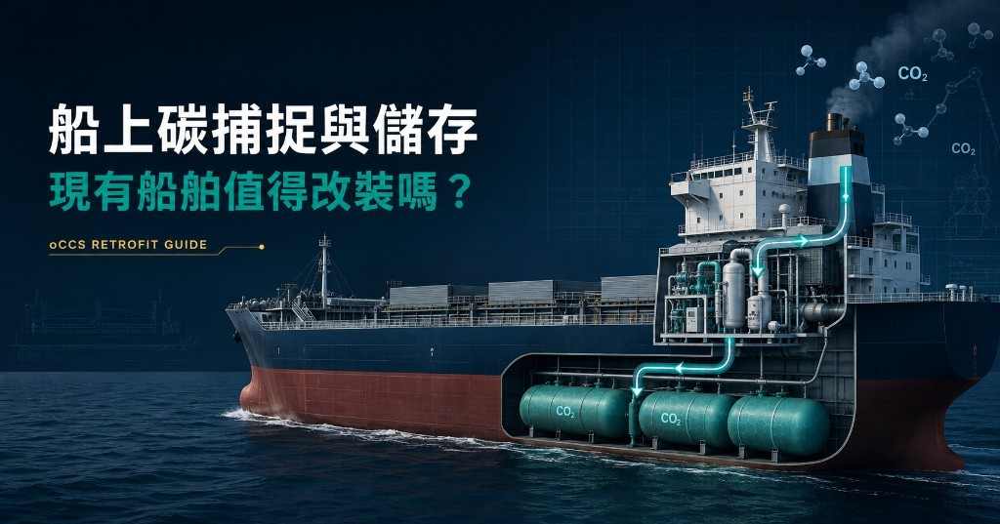
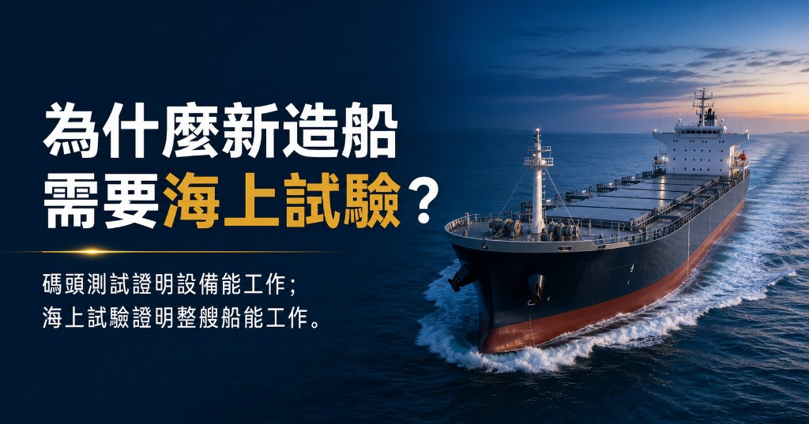
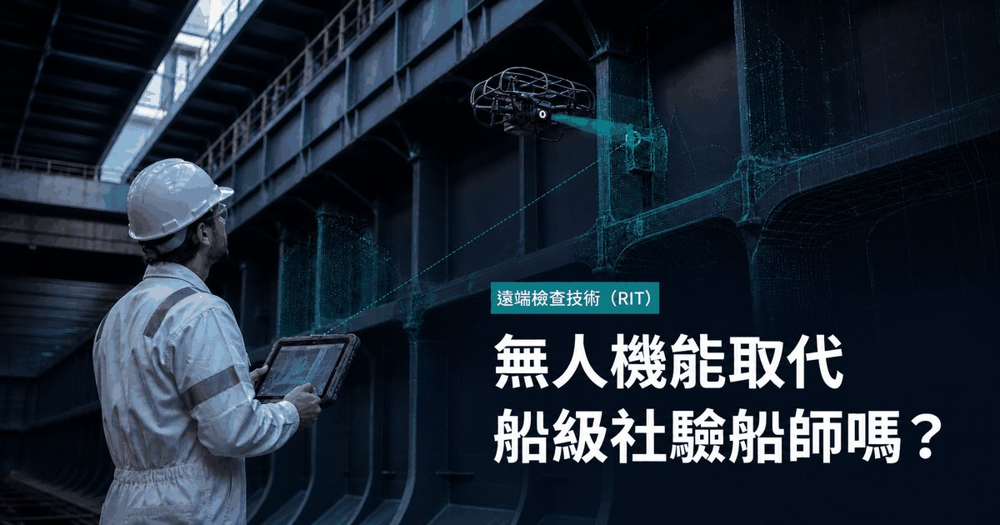
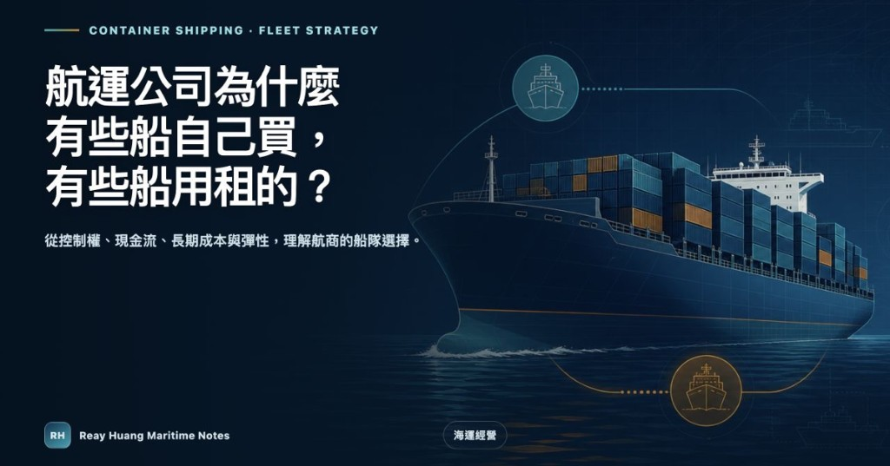
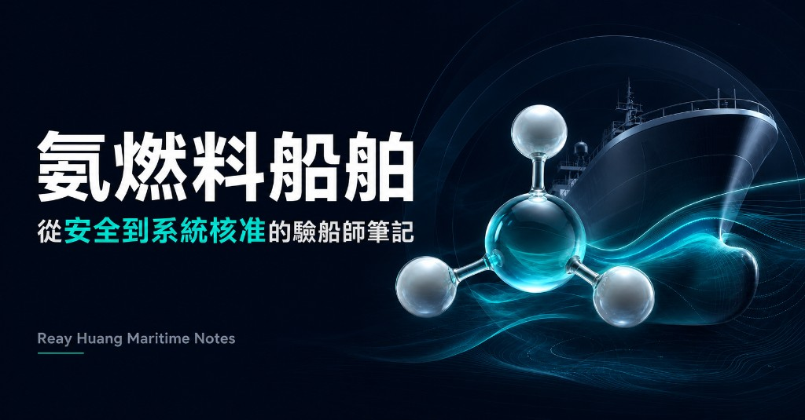
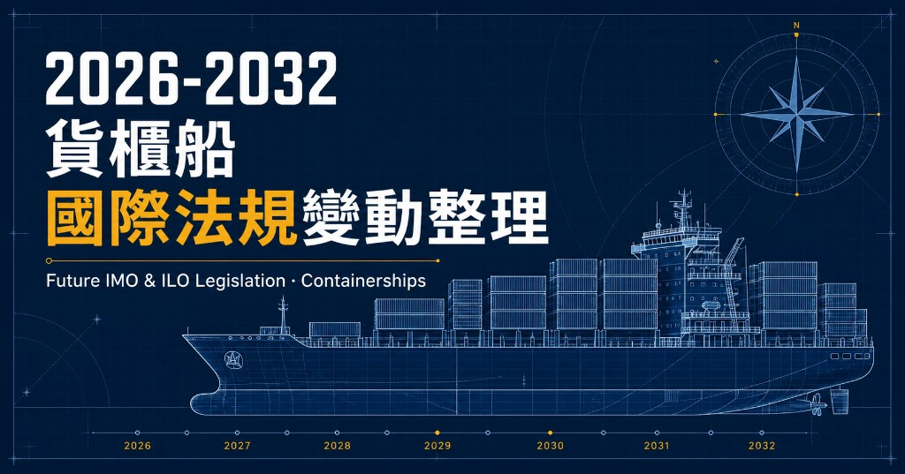

精選文章 編輯精選
檢驗必讀與近期法規更新 — 優先推薦閱讀
船舶數位化管理：從營運痛點到數位轉型路線圖
從船東營運痛點、市售 Marine ERP 與 PMS 方案、OneOcean 案例到可執行的數位轉型路線圖。

LR Advisory｜海事顧問服務視覺導覽
以視覺化方式整理 LR Advisory 的定位、四大挑戰、服務內容、服務對象與應用情境。

MARPOL 法規架構摘要筆記
整理 MARPOL 73/78 公約架構、六大 Annex、證書文件、PSC 查核重點與 Annex VI 更新提醒，作為污染防止合規盤點參考。

SOLAS 法規架構摘要筆記
整理 SOLAS 公約架構、章節全景、船舶改裝關聯、強制性章程與送審文件清單，作為檢驗與專案初步盤點參考。

最新內容
海事筆記、管理筆記與個人簡介

船上碳捕捉與儲存：現有船舶值得改裝嗎？
深入淺出介紹現有船舶加裝船上碳捕捉與儲存系統（oCCS）的技術、改裝整合、法規、商業條件與驗船重點。

為什麼新造船需要海上試驗？
碼頭測試證明設備能工作；海上試驗則要證明整艘船能工作。從推進、操縱、舵機、電力、自動控制、故障反應與驗收證據，理解 Sea Trial 如何證明整艘船能夠安全、可靠地工作。

無人機能取代船級社驗船師嗎？船東與船舶管理者必懂的 RIT 遠端檢查技術
從船東、船舶管理者與操作人員的角度，解析遠端檢查技術（RIT）如何運用無人機、ROV、爬壁機器人與 UT，改變近觀檢驗、成本、安全、資料追溯與船級社驗船流程。
船舶數位化管理：從營運痛點到數位轉型路線圖
從船東營運痛點、市售 Marine ERP 與 PMS 方案、OneOcean 案例到可執行的數位轉型路線圖。

航運公司為什麼有些船自己買、有些船用租的？
從第一性原理比較自有船、期租船與光船租賃的控制權、成本、彈性與風險，並觀察長榮、陽明與萬海的公開船隊結構。

氨燃料船舶：從安全、法規到技術成熟度的驗船師筆記
以驗船師視角整理 Lloyd's Register《Fuel for Thought: Ammonia》，涵蓋氨的毒性、材料相容性、SCC、加注風險、IGF/IGC Code、FuelEU、生命週期排放、引擎與燃料供應系統。

2026-2032 貨櫃船國際法規變動整理
以驗船師視角整理 Lloyd's Register《Future IMO and ILO Legislation – Container Ships, Summer 2026》，涵蓋 SOLAS、MARPOL、MLC、IGF、IMDG、BWM、CII 與貨櫃船火災等 2026–2036 年法規變動。
船舶防風罩為何做得更大風阻反而更低？
從風阻原理、風洞試驗、實船大數據與造船廠技術報告，解析大型貨櫃船船艏 Wind Shield 的節能效益、設計限制與實務意義。
電子證書聯合指南｜船級、RO 與 PSC 實務影響
深度解析 FAL-LEG-MEPC-MSC.1/Circ.1 電子證書使用聯合指南，串連旗國授權、電子簽章、ISM 文件管制與港口國查驗，整理船級社、RO 與 PSC 實務重點。
船上應攜帶證書與文件清單 (MSC.1/Circ.1646)
依 IMO 2022 版通函整理可搜尋的證書與文件資料庫，涵蓋英文原名、中文翻譯、目的摘要、適用條件與法規引用，協助接船、PSC 與文件盤點查核。
LR 引擎廠試與船上試俥要求
解析 LR-RU-001 Part 5 Ch 2 Section 11 往復式內燃機 FAT 工廠驗收試驗與 Shipboard trials 船上試俥要求，涵蓋試驗範圍、DF／GF 引擎、電子控制與實務查核重點。
LR 低閃點燃料船舶入級規則架構
整理 LR-RU-012（July 2025）的文件定位、章節架構、IGF Code 整合邏輯、LFPF 入級符號、燃料別附錄與實務審查重點。
船舶艉軸檢驗程序要點
整理 LR Survey Procedures Manual 艉軸檢驗項目，涵蓋 Tailshaft / Screwshaft 製造、安裝、定期檢驗、NDE、軸襯、防蝕包覆、修理更換與報告紀錄重點。
船舶舵機檢驗程序要點
整理 LR Survey Procedures Manual（SPM）中舵機檢驗項目，涵蓋 SOLAS II-1/29、LR Rules Pt 5 Ch 19、應急操舵能力、海試與現有船檢查要求。
壓艙水處理系統安全審查導覽
以 LR 規範第 5 篇第 25 章為主軸，整理 BWTS 安裝安全審查邏輯、10 類技術分類、13 節規範重點與驗船師現場清單。
海事設備網路韌性新規定
15 分鐘讀懂 IMO、IACS UR E26／E27 與 LR 船級規則的海事網路韌性架構、法規時程、查核重點與現場應用。
LR Advisory｜海事顧問服務視覺導覽
以視覺化方式整理 LR Advisory 的定位、四大挑戰、服務內容、服務對象與應用情境。
MARPOL 法規架構摘要筆記
整理 MARPOL 73/78 公約架構、六大 Annex、證書文件、PSC 查核重點與 Annex VI 更新提醒，作為污染防止合規盤點參考。
從經驗採購到資料化船隊備品管理
以 6,944 TEU 貨櫃船船隊燃油閥備品為案例，整理 PDCA、MRP 與 MPDC 如何串接需求預測、採購規劃與持續改善。
SOLAS 法規架構摘要筆記
整理 SOLAS 公約架構、章節全景、船舶改裝關聯、強制性章程與送審文件清單，作為檢驗與專案初步盤點參考。
危險區域防爆設備分類
Ex 防爆標示、保護型式、氣體群組、溫度等級、Zone 分區、責任分工與查證文件視覺化整理。
《Fuel for Thought》LPG 報告摘要
LPG 作為船用燃料的基本特性、安全風險、法規架構、加注作業與未來低碳燃料路徑視覺化筆記。
新造船專案管理六大階段筆記
六大步驟從專案啟動到交付結案，整理 PM 與驗船師的角色分工、文件清單、風險警訊與表單速查。
以驗船師角色解釋 6S 精實管理
從驗船師視角整理 6S 在船舶檢驗、機艙巡檢、甲板作業與安全管理中的實務意義，含機艙檢查表與控制層級對照。
5S 概覽重點筆記
五大支柱、推動角色、主要效益與實務稽核方式視覺化整理。
統計學商業應用重點筆記
相關分析、簡單線性迴歸、R-squared、假說檢定與 p 值，含電商廣告預算決策綜合案例。
IMO MSC 111 重點筆記
MASS、替代燃料、IGC/IGF、SDC、NCSR、SSE 等會議決議視覺化整理，含生效時程與實務追蹤清單。
海上無線電通信設備與 GMDSS 重點導讀
以檢驗實務視角整理 GMDSS、DSC、EPIRB、SART、AIS 等設備功能、法規邏輯與常見缺失。
《Fuel for Thought》LNG 報告摘要
LNG 作為船用燃料的技術成熟度、甲烷逸散、法規、供應與脫碳路徑重點整理。
《Fuel for Thought》甲醇報告摘要
甲醇作為船用燃料的特性、安全、法規、供應與技術成熟度重點整理。
MEPC 83／MEPC 84 視覺化筆記
GFI、CII、Net-Zero Framework 等環保法規重點整理。
SBC需求型態分類
以 ADI 與 CV² 分類備品需求，整理預測、採購與庫存管理策略。
工作經歷 · 教育背景 · LinkedIn
LR、長榮海運資歷；陽明交大與成大雙碩士，研究項目涵蓋船體結構強度分析與供應鏈物流管理，並結合實務船上與總部岸端服務與船舶法規檢驗經驗。